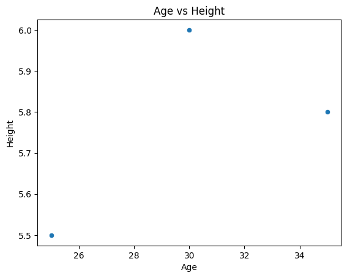

!pwd/home/haseong/lecture/cnu-deeplearning-2024구글 드라이브 연결
!pwd/home/haseong/lecture/cnu-deeplearning-2024from google.colab import drive
import os
drive.mount('/content/drive')
os.chdir('drive/MyDrive/2024-cnu-lecture')!pwdI want to learn “2. Data Handling and Analysis”. can you explain me a brief explanation and examples?
Sure! Data handling and analysis are essential skills in Python, especially for tasks like manipulating datasets, performing statistical analyses, and creating visualizations. We’ll focus on the key libraries used for these purposes: NumPy, Pandas, and Matplotlib/Seaborn.
NumPy is a powerful library for numerical operations and handling arrays.
Installation:
!pip install numpyimport numpy as np
# Creating a 1D array
arr1 = np.array([1, 2, 3, 4, 5])
# Creating a 2D array
arr2 = np.array([[1, 2, 3], [4, 5, 6]])
print(arr1)
print(arr2)
# Element-wise operations
arr3 = arr1 * 2
print(arr3)
# Mathematical functions
print(np.sqrt(arr1))[1 2 3 4 5]
[[1 2 3]
[4 5 6]]
[ 2 4 6 8 10]
[1. 1.41421356 1.73205081 2. 2.23606798]
import numpy as np
arr = [1, 2, 3]
print(arr)
print(type(arr))
a = np.array([1,2,3])
print(a)
print(a.dtype)
print(a.shape)
print(type(a))[1, 2, 3]
<class 'list'>
[1 2 3]
int64
(3,)
<class 'numpy.ndarray'>arr2 = np.array([[1,2,3], [4,5,6]])
print(arr2)
print(type(arr2))
print(arr2.shape)
print(arr2.dtype)[[1 2 3]
[4 5 6]]
<class 'numpy.ndarray'>
(2, 3)
int64a = np.arange(1, 10).reshape(3,3) # [1, 10)
print(a)
a = np.ones((3,4), dtype=np.int16)
b = np.ones((3,4), dtype=np.int16)
print(a)
print(b)
print(a+b)
print(a-b)[[1 2 3]
[4 5 6]
[7 8 9]]
[[1 1 1 1]
[1 1 1 1]
[1 1 1 1]]
[[1 1 1 1]
[1 1 1 1]
[1 1 1 1]]
[[2 2 2 2]
[2 2 2 2]
[2 2 2 2]]
[[0 0 0 0]
[0 0 0 0]
[0 0 0 0]]dir(np)Pandas is a powerful library for data manipulation and analysis. It provides data structures like DataFrame, which is similar to tables in databases or spreadsheets.
pip install pandas
from pandas import Series, DataFramegenes = Series([0.1, 0.2, 1.4, 0.6, 1.1])
print(genes)0 0.1
1 0.2
2 1.4
3 0.6
4 1.1
dtype: float64genes = Series([0.1, 0.2, 1.4, 0.6, 1.1], index=['A', 'B', 'C', 'D', 'E'])
print(genes)A 0.1
B 0.2
C 1.4
D 0.6
E 1.1
dtype: float64import pandas as pd
df = pd.DataFrame([[0, 4, 5], [0, 6, 7], [20, 30, 40]],
index=[1, 2, 3], columns=['P', 'Q', 'R'])
print(df) P Q R
1 0 4 5
2 0 6 7
3 20 30 40import pandas as pd
data = {
'Name': ['Alice', 'Bob', 'Charlie'],
'Age': [25, 30, 35],
'Height': [5.5, 6.0, 5.8]
}
df = pd.DataFrame(data)
print(df) Name Age Height
0 Alice 25 5.5
1 Bob 30 6.0
2 Charlie 35 5.8data = [
{'Name': 'Alice', 'Age': 25, 'Height': 5.5},
{'Name': 'Bob', 'Age': 30, 'Height': 6.0},
{'Name': 'Charlie', 'Age': 35, 'Height': 5.8}
]
df = pd.DataFrame(data)
print(df) Name Age Height
0 Alice 25 5.5
1 Bob 30 6.0
2 Charlie 35 5.8genes = {'A': [0.5, 0.1, 0.3],
'B': [0.8, 0.9, 0.4]}
print(genes)
genes_df = DataFrame(genes)
print(genes_df)
print(genes_df['A'])
print(type(genes_df['A']))
genes_df = DataFrame(genes, columns=['B', 'A'], index=['day1', 'day2', 'day3'])
print(genes_df){'A': [0.5, 0.1, 0.3], 'B': [0.8, 0.9, 0.4]}
A B
0 0.5 0.8
1 0.1 0.9
2 0.3 0.4
0 0.5
1 0.1
2 0.3
Name: A, dtype: float64
<class 'pandas.core.series.Series'>
B A
day1 0.8 0.5
day2 0.9 0.1
day3 0.4 0.3data = [
{'Name': 'Alice', 'Age': 25, 'Height': 5.5},
{'Name': 'Bob', 'Age': 30, 'Height': 6.0},
{'Name': 'Charlie', 'Age': 35, 'Height': 5.8}
]
df = pd.DataFrame(data)
print(df)
Name Age Height
0 Alice 25 5.5
1 Bob 30 6.0
2 Charlie 35 5.8# Selecting columns
ages = df['Age']
print(ages)
# Filtering rows
adults = df[df['Age'] > 18]
print(adults)
# Adding a new column
df['Weight'] = [65, 70, 75]
print(df)
# Grouping and Aggregating
grouped = df.groupby('Name').mean()
print(grouped)0 25
1 30
2 35
Name: Age, dtype: int64
Name Age Height
0 Alice 25 5.5
1 Bob 30 6.0
2 Charlie 35 5.8
Name Age Height Weight
0 Alice 25 5.5 65
1 Bob 30 6.0 70
2 Charlie 35 5.8 75
Age Height Weight
Name
Alice 25.0 5.5 65.0
Bob 30.0 6.0 70.0
Charlie 35.0 5.8 75.0genes1 = Series([0.1, 0.2, 1.4, 0.6, 1.1], index=['A', 'B', 'C', 'D', 'E'])
genes2 = Series([0.1, 0.2, 1.4, 0.6, 1.1], index=['B', 'C', 'D', 'E', 'A'])
genes1 + genes2A 1.2
B 0.3
C 1.6
D 2.0
E 1.7
dtype: float64print(genes2.sort_values())
print(genes2.sort_index())B 0.1
C 0.2
E 0.6
A 1.1
D 1.4
dtype: float64
A 1.1
B 0.1
C 0.2
D 1.4
E 0.6
dtype: float64genes = {'A': [0.5, 0.1, 0.3],
'B': [0.8, 0.9, 0.4]}
genes_df = DataFrame(genes, columns=['B', 'A'], index=['day1', 'day2', 'day3'])
print(genes)
print(genes_df){'A': [0.5, 0.1, 0.3], 'B': [0.8, 0.9, 0.4]}
B A
day1 0.8 0.5
day2 0.9 0.1
day3 0.4 0.3print(genes_df['A'])
print(genes_df.loc['day1'])
print(genes_df.index)
print(list(genes_df.columns))day1 0.5
day2 0.1
day3 0.3
Name: A, dtype: float64
B 0.8
A 0.5
Name: day1, dtype: float64
Index(['day1', 'day2', 'day3'], dtype='object')
['B', 'A']Matplotlib is a plotting library for creating static, animated, and interactive visualizations. Seaborn is built on top of Matplotlib and provides a high-level interface for drawing attractive statistical graphics.
Installation:
pip install matplotlib seabornimport matplotlib.pyplot as plt
# Line plot
plt.plot([1, 2, 3, 4], [1, 4, 9, 16])
plt.xlabel('X-axis')
plt.ylabel('Y-axis')
plt.title('Line Plot')
plt.show()import matplotlib.pyplot as plt
import seaborn as sns
data = [
{'Name': 'Alice', 'Age': 25, 'Height': 5.5},
{'Name': 'Bob', 'Age': 30, 'Height': 6.0},
{'Name': 'Charlie', 'Age': 35, 'Height': 5.8}
]
df = pd.DataFrame(data)
print(df)
# Scatter plot with Seaborn
sns.scatterplot(x='Age', y='Height', data=df)
plt.title('Age vs Height')
plt.show() Name Age Height
0 Alice 25 5.5
1 Bob 30 6.0
2 Charlie 35 5.8
dir(sns)

I have downloaded a fasta file containing 800 esterase nucleotide sequences. the file is saved at “data/esterase.fa”. can you provide a python code that can read the sequences and compute their length and GC contents ratio?
Certainly! To read a FASTA file containing 800 esterase nucleotide sequences and compute their lengths and GC content ratios, you can use the Biopython library. Here is a Python script that accomplishes this:
Installation
First, make sure you have Biopython installed:
pip install biopythonfrom Bio import SeqIO
from Bio.SeqUtils import gc_fraction
# Function to compute sequence length and GC content
def compute_sequence_stats(seq):
length = len(seq)
gc_content = gc_fraction(seq) * 100 # Convert to percentage
return length, gc_content
# Read the FASTA file and process each sequence
def process_fasta_file(file_path):
records = SeqIO.parse(file_path, "fasta")
esterase_stats = []
for record in records:
length, gc_content = compute_sequence_stats(record.seq)
esterase_stats.append({
"ID": record.id,
"Length": length,
"GC_Content": gc_content
})
return esterase_stats
# Example usage
fasta_file = 'data/esterases.fasta' # Replace with your FASTA file path
esterase_stats = process_fasta_file(fasta_file)
# Print the results
for esterase in esterase_stats:
print(f"ID: {esterase['ID']}, Length: {esterase['Length']} bp, GC Content: {esterase['GC_Content']:.2f}%")I want to store the result above in a file with json csv format. Than I need a code to read the file and convert the data in a DataFrame format.
Sure! Let’s modify the script to store the results in both JSON and CSV formats. Then, we’ll write a separate script to read these files and convert the data into a Pandas DataFrame.
import json
import csv
from Bio import SeqIO
from Bio.SeqUtils import gc_fraction
# Function to compute sequence length and GC content
def compute_sequence_stats(seq):
length = len(seq)
gc_content = gc_fraction(seq) * 100 # Convert to percentage
return length, gc_content
# Read the FASTA file and process each sequence
def process_fasta_file(file_path):
records = SeqIO.parse(file_path, "fasta")
esterase_stats = []
for record in records:
length, gc_content = compute_sequence_stats(record.seq)
esterase_stats.append({
"ID": record.id,
"Length": length,
"GC_Content": gc_content
})
return esterase_stats
# Save results to JSON and CSV
def save_results(esterase_stats, json_file, csv_file):
# Save to JSON
with open(json_file, 'w') as jf:
json.dump(esterase_stats, jf, indent=4)
# Save to CSV
with open(csv_file, 'w', newline='') as cf:
writer = csv.DictWriter(cf, fieldnames=['ID', 'Length', 'GC_Content'])
writer.writeheader()
for esterase in esterase_stats:
writer.writerow(esterase)
# Example usage
fasta_file = 'data/esterases.fasta' # Replace with your FASTA file path
json_file = 'data/esterase_stats.json'
csv_file = 'data/esterase_stats.csv'
esterase_stats = process_fasta_file(fasta_file)
save_results(esterase_stats, json_file, csv_file)
print(f"Results saved to {json_file} and {csv_file}")Results saved to data/esterase_stats.json and data/esterase_stats.csvimport pandas as pd
import json
# Load data from JSON file
with open('data/esterase_stats.json', 'r') as jf:
esterase_stats_json = json.load(jf)
# Convert to DataFrame
df_json = pd.DataFrame(esterase_stats_json)
print("DataFrame from JSON file:")
print(df_json.head())
# Load data from CSV file
df_csv = pd.read_csv('data/esterase_stats.csv')
print("DataFrame from CSV file:")
print(df_csv.head())DataFrame from JSON file:
ID Length GC_Content
0 EU240725.1 240 50.833333
1 NZ_JBBEZD010000544.1 387 48.062016
2 NZ_JADOYP010000246.1 234 55.982906
3 NZ_JAJAQZ010000712.1 252 52.777778
4 NZ_JABFYM010000640.1 769 52.405722
DataFrame from CSV file:
ID Length GC_Content
0 EU240725.1 240 50.833333
1 NZ_JBBEZD010000544.1 387 48.062016
2 NZ_JADOYP010000246.1 234 55.982906
3 NZ_JAJAQZ010000712.1 252 52.777778
4 NZ_JABFYM010000640.1 769 52.405722I want a python code that display the statistics of the GC distribution and boxplot of the length.
Sure! Let’s create a Python script that reads the data from the previously saved JSON or CSV file, computes statistics for the GC content distribution, and generates a boxplot for the sequence lengths using Pandas and Matplotlib.
import pandas as pd
import matplotlib.pyplot as plt
import seaborn as sns
# Load data from CSV file
df = pd.read_csv('data/esterase_stats.csv')
# Compute statistics for GC content distribution
gc_stats = df['GC_Content'].describe()
print("GC Content Distribution Statistics:")
print(gc_stats)
# Generate a histogram for GC content distribution
plt.figure(figsize=(10, 6))
sns.histplot(df['GC_Content'], bins=30, kde=True)
plt.title('GC Content Distribution')
plt.xlabel('GC Content (%)')
plt.ylabel('Frequency')
plt.show()
# Generate a boxplot for sequence lengths
plt.figure(figsize=(10, 6))
sns.boxplot(x=df['Length'])
plt.title('Boxplot of Sequence Lengths')
plt.xlabel('Sequence Length (bp)')
plt.show()GC Content Distribution Statistics:
count 355.000000
mean 51.362399
std 5.551809
min 29.739777
25% 50.052780
50% 51.901566
75% 54.322222
max 75.683891
Name: GC_Content, dtype: float64
from Bio import SeqIO
from Bio.SeqUtils import gc_fraction
# Read a FASTA file
fasta_file = 'data/esterases.fasta'
results = SeqIO.parse(fasta_file, 'fasta')
for record in results:
print(record.id)
print(record.seq)
print(gc_fraction(record.seq))
print(results)from Bio import SeqIO
from Bio.SeqUtils import gc_fraction
# Read a FASTA file
fasta_file = 'data/esterases.fasta'
results = SeqIO.parse(fasta_file, 'fasta')
for record in results:
seq = record.seq
length = len(seq)
gc_content = gc_fraction(seq) * 100 # Convert to percentage
print(f"ID: {record.id}, Length: {length} bp, GC Content: {gc_content:.2f}%")
from Bio import SeqIO
from Bio.SeqUtils import gc_fraction
import pandas as pd
# Read a FASTA file
fasta_file = 'data/esterases.fasta'
results = SeqIO.parse(fasta_file, 'fasta')
esterase_stats = []
for record in results:
seq = record.seq
length = len(seq)
gc_content = gc_fraction(seq) * 100 # Convert to percentage
esterase_stats.append({
"ID": record.id,
"Length": length,
"GC_Content": gc_content
})
print(esterase_stats)
pd.DataFrame(esterase_stats)from Bio import SeqIO
from Bio.SeqUtils import gc_fraction
import pandas as pd
# Read a FASTA file
fasta_file = 'data/esterases.fasta'
results = SeqIO.parse(fasta_file, 'fasta')
esterase_stats = []
# Function to compute sequence length and GC content
def compute_sequence_stats(seq):
length = len(seq)
gc_content = gc_fraction(seq) * 100 # Convert to percentage
return length, gc_content
for record in results:
seq = record.seq
length, gc_content = compute_sequence_stats(seq)
esterase_stats.append({
"ID": record.id,
"Length": length,
"GC_Content": gc_content
})
print(esterase_stats)
pd.DataFrame(esterase_stats)